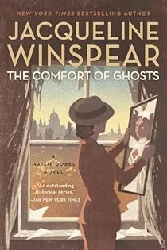

Testimonials

“It is a vulnerable thing to allow someone into your book project.
My fears and doubts were resolved the moment I met Lilly. Lilly
brings a warmth, understanding, and knowing to her editing work.
The moment she began working on my project I felt deeping known
and seen, and that showed up in her ability to bring my voice and
personality to the editing work. She immediately got me and got
the project. Her editing took my project from rough, rough draft
to acceptance from my publisher with an efficiency, skill level,
and precision only someone who has been doing this for decades,
and has a true gift with words can produce. That is Lilly. She is
both gifted and experienced. Kind and professional. If I ever do
this again, I can't imagine doing it without her.”
“I was referred to Lilly after a succession of other collaborators
not working out for one reason or another. Lilly was a breath of
fresh air. I can honestly say that if it wasn’t for Lilly, I would
have never finished writing my book. She was extremely patient
with me. She took the time to listen to me. Which helped her
understand where I was coming from. She cried with me. Laughed
with me. She kept reassuring me that my ideas mattered and that my
voice needed to be heard.”


“I am most grateful to Lilly Golden, who offered sound editorial
advice and wise professional counsel ... for respectfully
directing me to the places where I needed to wield the scalpel
with a steady hand or add more clay with care.” (In reference to
The White Lady) And “Lilly was
The Comfort of Ghosts first
reader, demonstrating an ability to identify elements of the story
that remained clear in my mind’s eye but not in the novel. Thank
you, Lilly for your sensitive commentary and wise counsel.”
“Working with Lilly on my first book was like being sent an angel
who literally chased all the demons of self-doubt away and
instilled an atmosphere of relaxation in which I was able to write
and perceive my work with greater clarity. It was always a
pleasure to meet her online and I would recommend her to anyone.”


“I could not have asked for a more sincere and enthusiastic
champion for my debut novel than Lilly. I felt supported, guided,
and in extremely competent hands throughout the process.”
“Lilly Golden is the best and most discerning editor I’ve had
during forty years of writing and publishing books. She’s a
thoughtful and astute reader whose ideas and suggestions always
seem to be spot on. She listens and cares deeply about the writing
and the writer. I look forward to working with her in the future.”

“Lilly is Golden, though—as true as it is—she would never let me
get away with that cliché. In our work on
The Hamilton Affair and
The Tubman Command, Lilly
continuously surprised me with her wide-ranging knowledge and
unerring taste, helping me avoid errors of fact and inapt imagery.
She’s an author’s best friend and secret weapon.”
“With patience, support, and astute attention to detail, Lilly
turned my manuscript into a published work of which I’m proud. I
simply couldn’t have been luckier than having Lilly’s expertise.
With penetrating questions and wise commentary, she motivated me
to write a more profound and engaging story.”


“I can say unreservedly that Lilly Golden is a kick-ass editor.
She knows when to hold an author’s hand and when to hold her feet
to the fire, all in the service of a final work that is better
than you ever imagined it could be.”